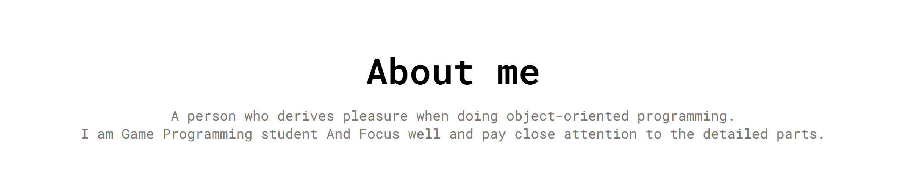
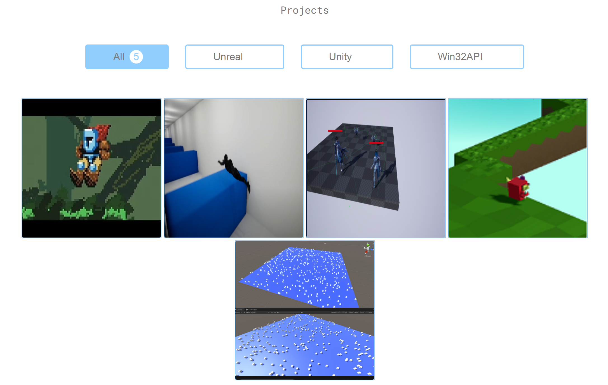
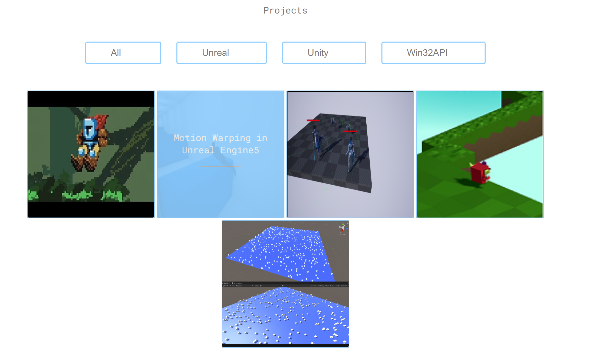
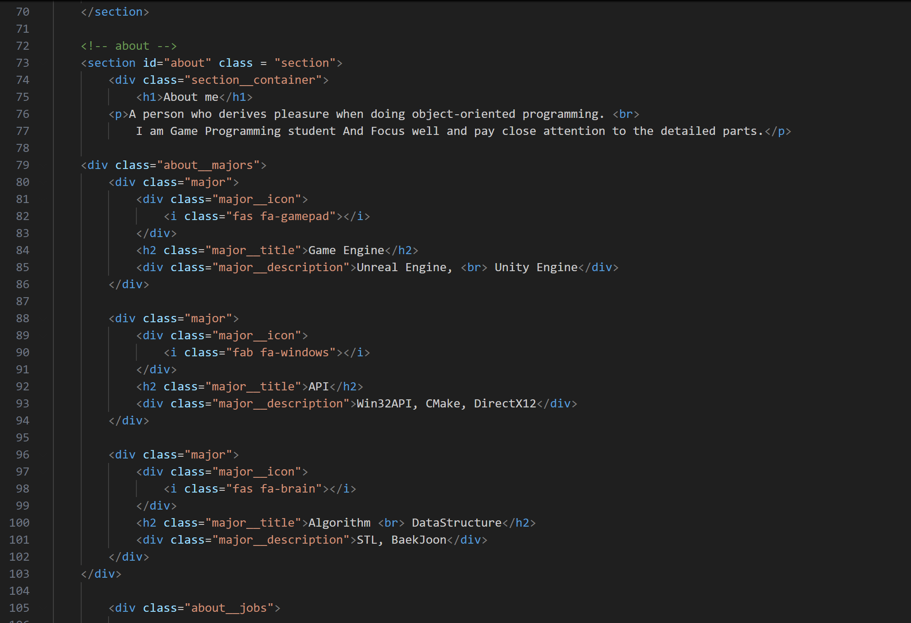
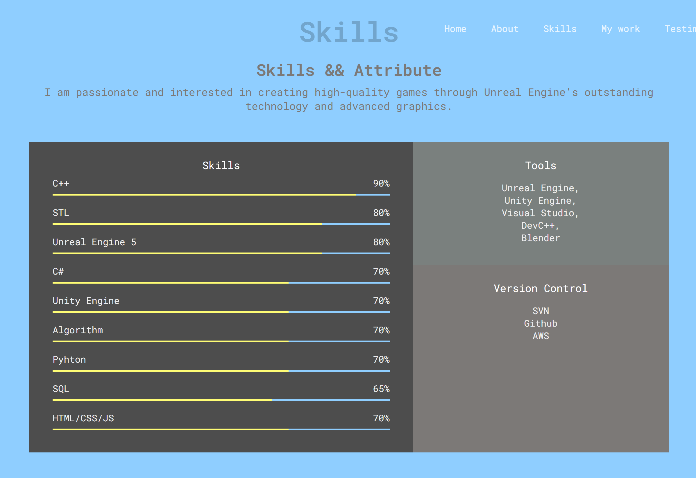

개인 포트폴리오 사이트 (3학년)
FontAwesome 아이콘
기술 로고 / 시각화기술 스택 옆에 FontAwesome 로고 아이콘을 배치하여 한눈에 기술 수준 확인. 프로젝트 제목/GitHub 링크에도 아이콘을 함께 배치하여 클릭 가능 요소를 강조.


반응형 프로젝트 소개
마우스 호버 / 스크롤목록 버튼과 이미지에 마우스 호버 반응 적용. 부드러운 스크롤링 처리로 프로젝트 간단 소개를 확인 가능.


기술 스킬 시각화
아이콘 / 외부 링크주요 기술 스택을 아이콘과 함께 시각적으로 정리. 블로그, 유튜브, 깃허브 링크를 삽입하여 외부에서 직접 확인 가능.

